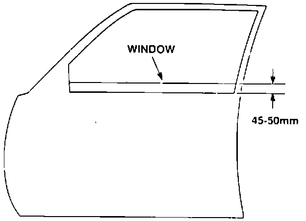
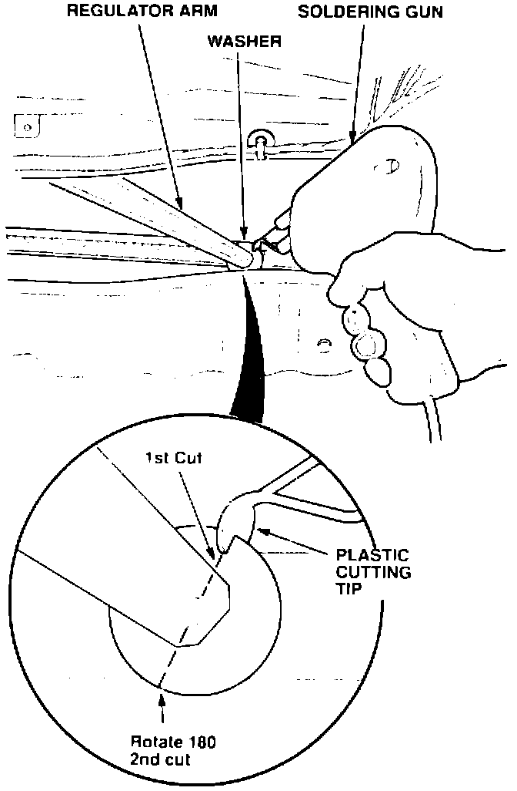

Front Window Regulator - Popping Noise
July 22, 1991BULLETIN NO.
91-039
YEAR
1991
MODEL
LEGEND COUPE
VIN APPLICATION
Through VIN
JH4KA8 ... MC005366
Popping Noise from the Front Window Regulator
SYMPTOM
A popping noise coming from the front door when the window is raised.
PROBABLE CAUSE
A plastic washer on the window regulator obstructs the regulator movement. When the regulator overcomes the washer's resistance it makes a popping noise.
CORRECTIVE ACTION
Remove the plastic washer from the window regulator as follows:

1. Lower the window with the affected regulator until there is 45 - 50 mm of the window showing.
2. Remove the door panel to gain access to the affected window regulator. (Refer to door panel plastic cover replacement procedure in Section 20 page 4 of the service manual).

3. Using a soldering gun with a plastic cutting tip. make a cut through the washer on the regulator arm as shown.
[NOTICE]
Use care when cutting the washer to not damage the slider with the plastic cutting tip.
4. Rotate the washer 180 and make another cut through the washer with the plastic cutting tip. Remove the washer from the regulator.
5. Lubricate the sliding surfaces of the window regulator with grease.
6. Reconnect the door panel switches and check the power window. door lock and security system for operation. Once all operations are checked, reinstall the door panel.
WARRANTY INFORMATION
In warranty:
The normal warranty applies.
Out-of-warranty:
Any repair performed after warranty expiration may be eligible for goodwill consideration by the District Service Manager. You must request consideration, and get the DSM's decision, before starting work.
Operation number: 826025 - Left door
827025 - Right door
Flat rate time: 0.5
Failed P/N: 72211-SP1-J01
Defect code: 042
Contention code: B07